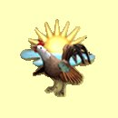
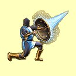
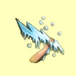
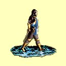
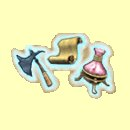
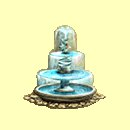
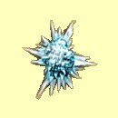
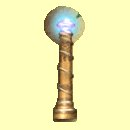

Magie vody
Probuzení
Mana: 1, Cena: 100, Potøebná úroveò dovednosti: Normální
Automaticky probudí v¹echny tvé postavy z normálního spánku a také i z magického spánku, pokud ten netrval pøíli¹ dlouho. Vìt¹í dovednost v Magii Vody znamená mo¾nost del¹ího spánku, ne¾ se kouzlo stane nefunkèním.
|  | Normální | Funguje, pokud postava spí ménì ne¾ 3 minuty za bod dovednosti |
| Expert | Funguje, pokud postava spí ménì ne¾ 1 hodinu za bod dovednosti | |
| Mistr | Funguje, pokud postava spí ménì ne¾ 1 den za bod dovednosti | |
| Velmistr | Rychlé zotavení |
Jedovatý sprej
Mana: 2, Cena: 200, Potøebná úroveò dovednosti: Normální
Vystøíkne jed na nestvùru pøed tvými postavami. Zranìní je malé, ale jen málo nestvùr je odolných proti Magii Vody, tak¾e kouzlo vìt¹inou funguje. Ka¾dá støela zpùsobí 2 body zranìní plus 1-2 body za bod dovednosti.
| Normální | Pomalé zotavení, 1 støela | |
| Expert | Rychlej¹í zotavení, 3 støely | |
| Mistr | Rychlej¹í zotavení, 5 støel | |
| Velmistr | Nejrychlej¹í zotavení, 7 støel |
Odolnost proti vodì
Mana: 3, Cena: 300, Potøebná úroveò dovednosti: Normální
Zvy¹uje odolnost v¹ech tvých postav proti kouzlùm magie vody o mno¾ství úmìrné tvým bodùm dovednosti Magie Vody. Efekt trvá hodinu za ka¾dý bod dovednosti.
|  | Normální | 1 bod odolnosti za bod dovednosti |
| Expert | 2 bod odolnosti za bod dovednosti | |
| Mistr | 3 bod odolnosti za bod dovednosti | |
| Velmistr | 4 bod odolnosti za bod dovednosti |
Ledová støela
Mana: 4, Cena: 400, Potøebná úroveò dovednosti: Normální
Vystøelí støelu ledu na samostatný cíl. Støela zpùsobí 1-4 body zranìní za bod dovednosti v Magii Vody.
|  | Normální | Pomalé zotavení |
| Expert | Rychlej¹í zotavení | |
| Mistr | Rychlej¹í zotavení | |
| Velmistr | Nejrychlej¹í zotavení |
Chùze po vodì
Mana: 5, Cena: 500, Potøebná úroveò dovednosti: Expertní
Chùze po vodì umo¾òuje tvým postavám chodit po vodní hladinì bez zranìní. Toto kouzlo funguje jen venku. Ubírá jeden bod many za ka¾dých 20 minut kontaktu tvé dru¾iny s vodou.
|  | Normální | n/a |
| Expert | Doba trvání 10 minut za bod dovednosti | |
| Mistr | Doba trvání 1 hodina za bod dovednosti | |
| Velmistr | Neubírá body many bìhem chùze |
Nabij pøedmìt
Mana: 8, Cena: 750, Potøebná úroveò dovednosti: Expertní
Nabije jakýkoliv magický pøedmìt, který pou¾ívá náplnì. Poka¾dé, kdy¾ je toto kouzlo zakouzleno, pøedmìt ztrácí trvale 50% - 1 náboj za bod dovednosti v Magii Vody.
| Normální | n/a | |
| Expert | Pøedmìt ztrácí 50% - 1 za bod dovednosti | |
| Mistr | Pøedmìt ztrácí 30% - 1 za bod dovednosti | |
| Velmistr | Pøedmìt ztrácí 20% - 1 za bod dovednosti |
Kyselinová støela
Mana: 10, Cena: 1000, Potøebná úroveò dovednosti: Expertní
Vystøelí spr¹ku extrémnì silné kyseliny na samostatný cíl. Kouzlo v¾dy zasáhne a zpùsobí 9 bodù zranìní plus 1-9 bodù za bod dovednosti v Magii Vody.
| Normální | n/a | |
| Expert | Støední doba zotavení | |
| Mistr | Rychlej¹í zotavení | |
| Velmistr | Nejrychlej¹í zotavení |
Oèaruj pøedmìt
Mana: 15, Cena: 1500, Potøebná úroveò dovednosti: Mistrovská
Kdy¾ je toto kouzlo zakouzleno na normální pøedmìt, ten má mo¾nost získat speciální vlastnosti. ©ance úspìchu je 10% za bod dovednosti v Magii Vody. Pøedmìt oèarovaný velmistrem zíkává lep¹í vlastnosti.
|  | Normální | n/a |
| Expert | n/a | |
| Mistr | Støednì silné oèarování | |
| Velmistr | Silné oèarování |
Mìstská brána
Mana: 20, Cena: 2000, Potøebná úroveò dovednosti: Mistrovská
Mìstská brána teleportuje dru¾inu k centrální fontánì do jakéhokoliv mìsta, které dru¾ina nav¹tívila. Mìstská brána má ¹anci na úspìch 10% za ka¾dý bod Magie Vody. Kouzlo nemù¾e být sesláno v blízkosti nepøátel.
|  | Normální | n/a |
| Expert | n/a | |
| Mistr | Nefunguje pokud jsou nepøátelské nestvùry blízko | |
| Velmistr | Funguje i kdy¾ jsou nepøátelské nestvùry blízko |
Ledová smr¹»
Mana: 25, Cena: 3000, Potøebná úroveò dovednosti: Mistrovská
Vystøelí kouli ledu ve smìru pohledu dru¾iny. Koule exploduje, kdy¾ nìco zasáhne a vystøelí 7 úlomkù ledu ve v¹ech smìrech (kromì smìru ke dru¾inì). Úlomky se odrá¾ejí, dokud nezasáhnou nestvùru nebo neroztají. Ka¾dý úlomek zpùsobí 12 bodù zranìní plus 1-6 bodù za bod dovednosti v Magii Vody.
|  | Normální | n/a |
| Expert | n/a | |
| Mistr | Støední doba zotavení a 7 úlomkù | |
| Velmistr | Rychlej¹í zotavení a 9 úlomkù |
Lloydùv maják
Mana: 30, Cena: 5000, Potøebná úroveò dovednosti: Velmistrovská
Lloydùv maják ti umo¾ní oznaèit si nìjaké místo a v budounosti se na toto místo zpìt teleportovat. Jak dlouho tato znaèka vydr¾í, závisí na dovednosti v Magii Vody. Pou¾ij toto kouzlo poka¾dé, kdy¾ hce¹ umístit znaèku nebo se vrátit k ji¾ umístìné. Ka¾dá znaèka zmizí za 1 týden za bod dovednosti v Magii Vody.
|  | Normální | n/a |
| Expert | n/a | |
| Mistr | n/a | |
| Velmistr | Toto kouzlo je tak dobré, jak jen mù¾e být! |